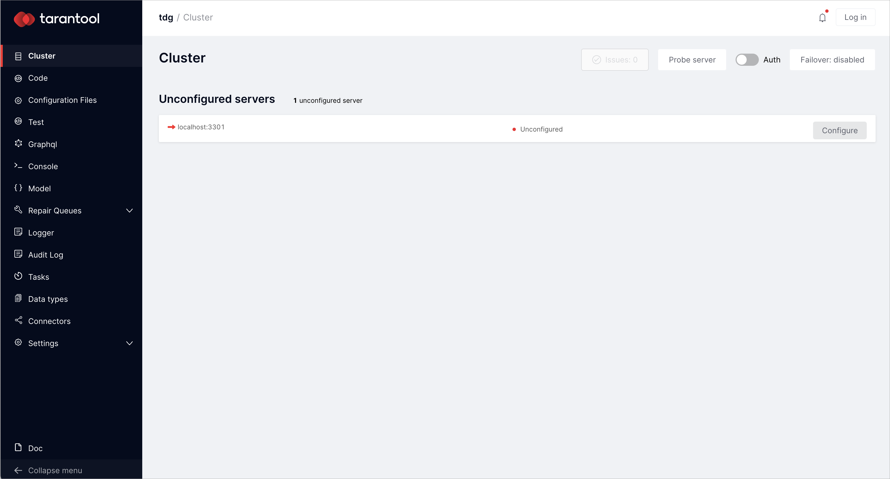
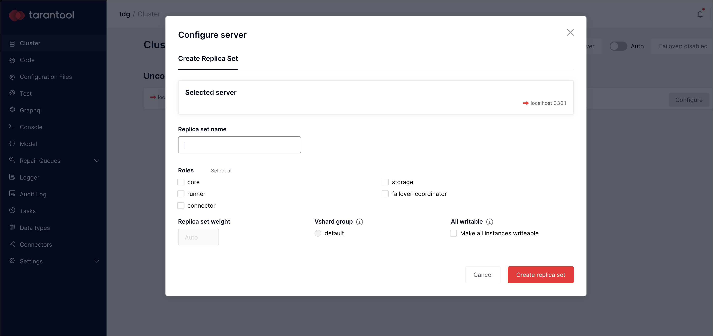

Running Tarantool Data Grid in Docker¶
You can run Tarantool Data Grid (TDG) as a Docker container to develop your solution or check if TDG is suitable for your project.
This guide will show you how to:
Getting Docker image file for deployment¶
Download the Docker image file of the latest version at the customer zone of
tarantool.io.
The download link looks like tdg-<version>-<hash>-docker-image.tar.gz.
If you do not have access to the customer zone, you can get one by applying this form or writing to sales@tarantool.io.
Running an instance¶
First, load the Docker image from the file that you’ve downloaded:
$ # change <version> and <hash> for the TDG version that you've downloaded $ docker load --input tdg2_tdg-<version>-<hash>docker-image.tar.gz
The output will look like the following:
$ docker load --input tdg2_tdg-2.0.0-1197-g1144f0c9-docker-image.tar.gz 174f56854903: Loading layer [==================================================>] 211.7MB/211.7MB 3755a040b03f: Loading layer [==================================================>] 124.4kB/124.4kB 62e0389f69ce: Loading layer [==================================================>] 80.7MB/80.7MB 6230a7f7e181: Loading layer [==================================================>] 2.56kB/2.56kB e714472acbb5: Loading layer [==================================================>] 54.62MB/54.62MB 32e4a08d6732: Loading layer [==================================================>] 2.048kB/2.048kB 63380e3c2f5c: Loading layer [==================================================>] 127.6MB/127.6MB 9a6936065be6: Loading layer [==================================================>] 4.348MB/4.348MB e70d4b034a27: Loading layer [==================================================>] 12.29kB/12.29kB Loaded image: tdg:2.0.0-1197-g1144f0c9
For details about
docker load, refer to the Docker documentation.Find an archive named
tdgin the list of images:$ docker image ls tdg REPOSITORY TAG IMAGE ID CREATED SIZE tdg 2.0.0-1197-g1144f0c9 564a45b770f8 10 days ago 463MB
Now run a container with a TDG instance:
$ docker run --rm -it -p 8080:8080 tdg:<tag>
For example:
$ docker run --rm -it -p 8080:8080 tdg:2.0.0-1197-g1144f0c9
You will now find the unconfigured instance at localhost:8080:

Configuring instance¶
On the Cluster tab, there is an unconfigured instance. To access all basic functions to work with data, click Configure. You will get the Configure server dialog:
In the Configure server dialog, specify two replica set parameters: replica set name and roles. Set any name and choose Select all option to switch on these roles:
core: configuration and administrationrunner: running the business logic using Lua codeconnector: data exchange with external systemsstorage: data validation and storage
failover-coordinator role enables by default.
You can read more about this role in Tarantool Cartridge documentation.
After assigning all roles, click Create replica set.
Note
In this example, all roles are switched simultaneously in one replica set. It is a good way to practice and see what TDG can do, but a wrong pattern to follow in production.
Initialize Tarantool vshard module by clicking Bootstrap vshard:
You can read more about this module in Tarantool documentation.